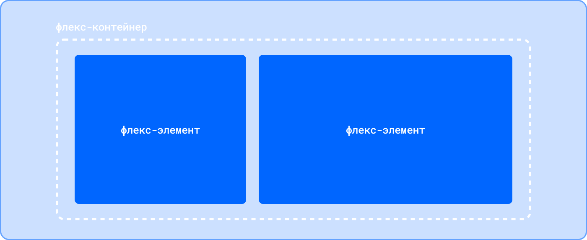
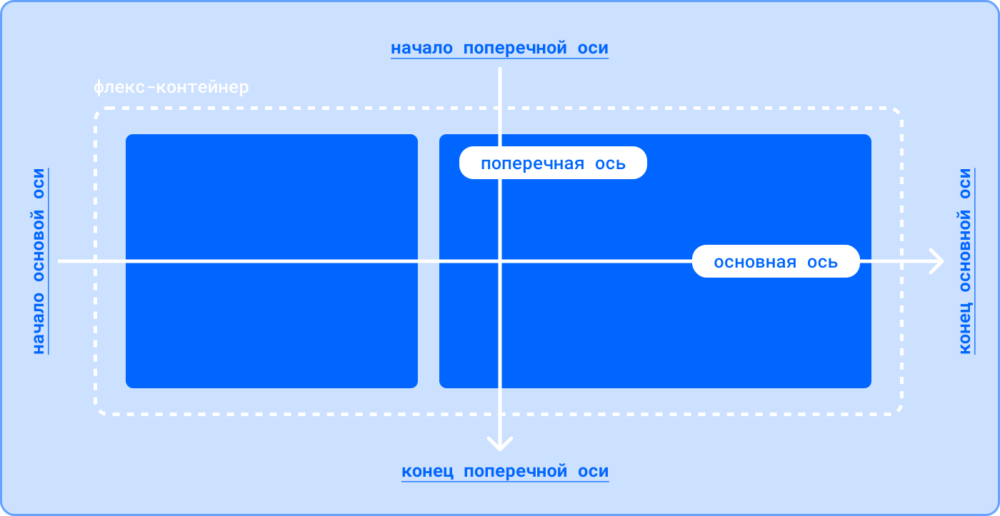
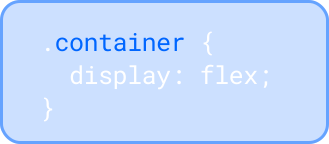
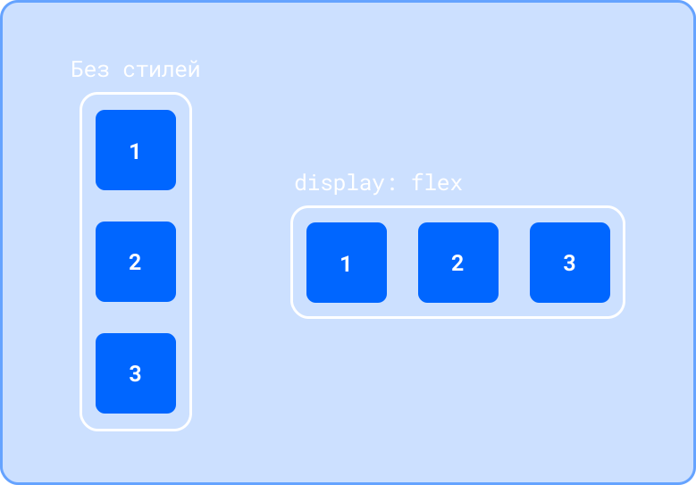
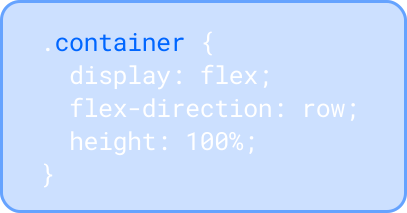
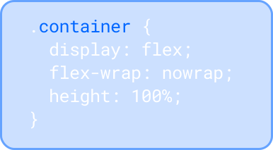
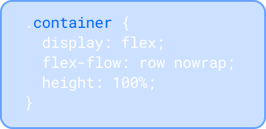
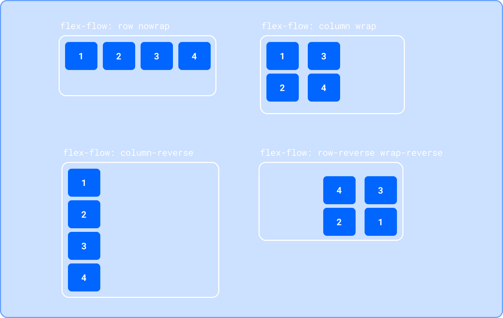
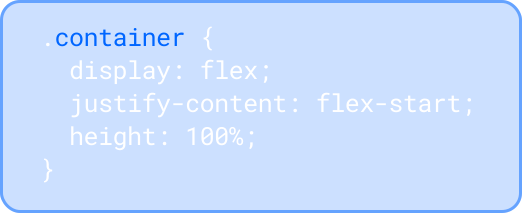
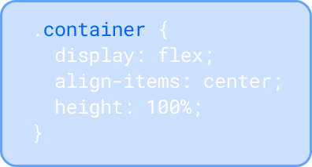

Блок 3.1. Стилизация сайта
при помощии CSS. Флексы
Основные термины
Flexbox — инструмент построения крупных сеток и микросеток.
Флекс-контейнер: элемент, к которому применяется свойство display: flex. Вложенные в него элементы подчиняются правилам раскладки флексов.
Флекс-элемент: элемент, вложенный во флекс-контейнер.
Основная ось: основная направляющая флекс-контейнера, вдоль которой располагаются флекс-элементы.
Поперечная (побочная, перпендикулярная) ось: ось, идущая перпендикулярно основной. Позже вы поймёте, для чего она нужна.
Начало / конец основной оси: точки в начале и в конце основной оси соответственно. Это пригодится нам для выравнивания флекс-элементов.
Начало / конец поперечной оси: точки в начале и в конце поперечной оси соответственно.
Свойства флекс-контейнера:
Display
Когда мы задаём какому-то элементу значение flex для свойства display, мы превращаем этот элемент в флекс-контейнер. Внутри него начинает действовать флекс-контекст, его дочерние элементы начинают подчиняться свойствам флексбокса.
Flex-Direction
Возможные значения:
- row (значение по умолчанию) — основная ось идёт горизонтально слева направо, поперечная ось идёт вертикально сверху вниз.
- row-reverse — основная ось идёт горизонтально справа налево, поперечная ось идёт вертикально сверху вниз.
- column — основная ось идёт вертикально сверху вниз, поперечная ось идёт горизонтально слева направо.
- column-reverse — основная ось идёт вертикально снизу вверх, поперечная ось идёт горизонтально слева направо.
Flex-Wrap
- По умолчанию значение у свойства flex-wrap — nowrap. При этом флекс-элементы помещаются (или пытаются уместиться) в один ряд и не переносятся в новый ряд, даже если не влезают в размеры родителя.
- Установив значение wrap, мы можем изменить это поведение, и флекс-элементы будут иметь возможность перенестись в новый ряд, если не влезают в одну линию в рамках родителя.
- Ещё одно возможное значение — wrap-reverse. В этом случае элементы будут располагаться снизу вверх, заполнив собой сперва нижний ряд, а те, что не влезли, перепрыгнут в ряд выше.
Flex-Flow
Свойство flex-flow является сокращённым свойством для отдельных свойств flex-direction и flex-wrap.
Как и со всеми шорткатами, с этим стоит быть осторожным. Хоть он и позволяет сэкономить пару строк кода, в случае переопределения одного из значений придётся переписывать свойство целиком, повторяя второе значение, которое не меняется. В таком случае проще было бы иметь два отдельных свойства и менять значения отдельно.
Justify-Content
Свойство позволяет выравнивать флекс-элементы внутри флекс-контейнера по основной оси.
Возможные значения:
- start — элементы прижимаются к тому краю, откуда начинается чтение на том языке, на котором отображается сайт.
- end — элементы прижимаются к краю, противоположному началу направления чтения на языке сайта.
- flex-start — элементы прижимаются к краю, от которого начинается основная ось.
- flex-end — элементы прижимаются к краю, у которого основная ось заканчивается.
- left — элементы прижмутся к левому краю родителя.
- right — элементы прижмутся к правому краю родителя.
- center — элементы выстраиваются по центру родителя.
- space-between — крайние элементы прижимаются к краям родителя, оставшиеся выстраиваются внутри контейнера равномерно, так, чтобы между ними были одинаковые отступы.
- space-around — свободное пространство делится поровну между элементами и по половине от этой доли размещается по бокам от каждого элемента. Таким образом, между соседними элементами будет равное расстояние, а снаружи крайних элементов — по половине этого расстояния.
- space-evenly — свободное место будет распределено так, чтобы расстояние между любыми двумя элементами было одинаковым и расстояние от крайних элементов до края было таким же.

Align-Items
Возможные значения:
- stretch (значение по умолчанию) — элементы растягиваются вдоль поперечной оси так, чтобы заполнить всего родителя. Это очень удобно, если вы делаете двухколоночный макет. Раньше приходилось при помощи разных костылей добиваться одинаковой высоты, а теперь достаточно сделать контейнер флексом, и колонки по умолчанию будут одной высоты.
- flex-start или start — элементы выстраиваются у начала поперечной оси. Разница между ними лишь в том, что второе значение «уважает» направление чтения выбранного языка.
- flex-end или end — элементы выстраиваются у конца поперечной оси. Разница между первым и вторым значениями аналогична предыдущему пункту.
- center — элементы выстраиваются по центру поперечной оси.
- baseline — элементы выравниваются по базовой линии текста. «Базовая линия» — baseline — воображаемая линия, проходящая по нижнему краю знаков шрифта (без учёта выносных элементов).